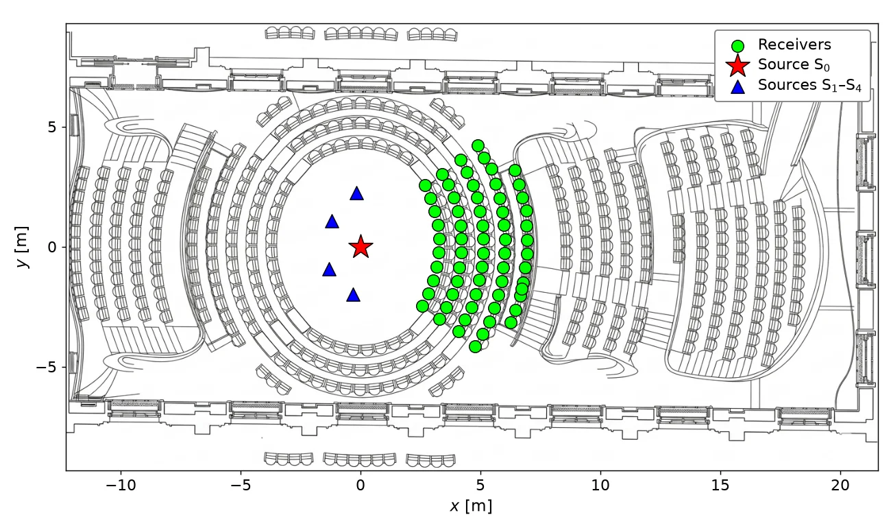

Overview
ARVERIR is an open dataset of spatial room impulse responses measured in the Giovanni Arvedi Auditorium in Cremona, a contemporary concert hall dedicated to the performance and recording of string instruments. Five sources were placed on stage, an omnidirectional reference and four directional loudspeakers at the positions of a string quartet, and eight-capsule spherical microphones recorded the responses at 65 seats.
Measurement setup
Sources
S0: B&K OmniPower 4292-L at the stage center. S1–S4: Genelec 8020C at first violin, second violin, viola and cello.
Receivers
Voyage Audio Spatial Mic, 8 cardioid capsules on a rigid sphere (Ambisonics up to 2nd order), 1.16 m above each seat.
Audience coverage
Sector A, five rows of 10, 12, 14, 16 and 12 seats, plus one off-grid position to validate interpolation methods.
Geometry
Calibrated positions of sources, array centers and every capsule, provided as CSV files.

Resources
The accompanying paper will appear at IWAENC 2026.
Cite this dataset
F. Miotello, G. Greco, P. Ostan, F. Del Gaudio, L. Comanducci, R. Malvermi, M. Pezzoli, and F. Antonacci, “The Sound of the Violin’s Home: A Higher-Order Room Impulse Response Dataset of the Arvedi Auditorium in Cremona,” Zenodo, 2026. doi: 10.5281/zenodo.20098847
@misc{miotello2026arverir,
title = {The Sound of the Violin's Home: A Higher-Order Room Impulse Response Dataset of the Arvedi Auditorium in Cremona},
author = {Miotello, Federico and Greco, Gioele and Ostan, Paolo and Del Gaudio, Francesca and Comanducci, Luca and Malvermi, Raffaele and Pezzoli, Mirco and Antonacci, Fabio},
publisher = {Zenodo},
year = {2026},
doi = {10.5281/zenodo.20098847}
}